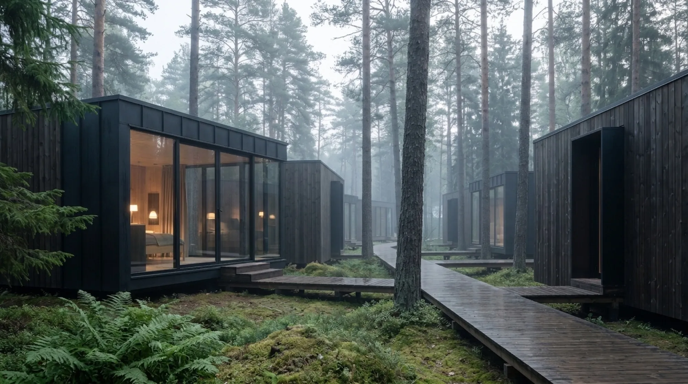
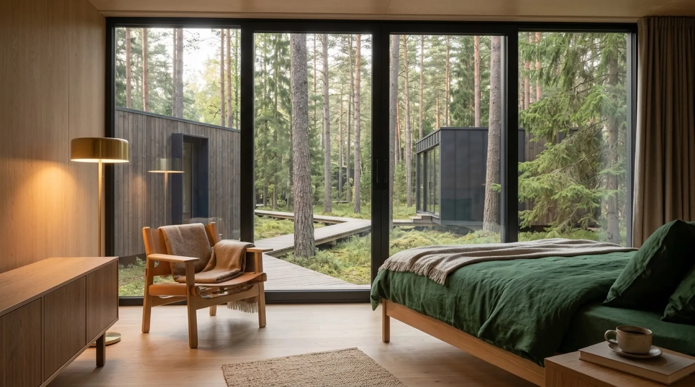
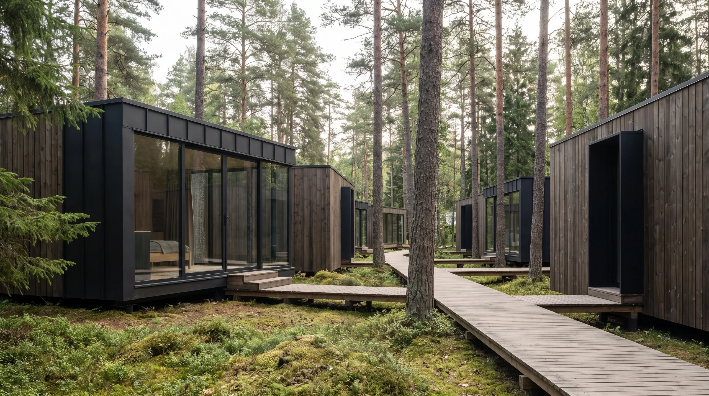
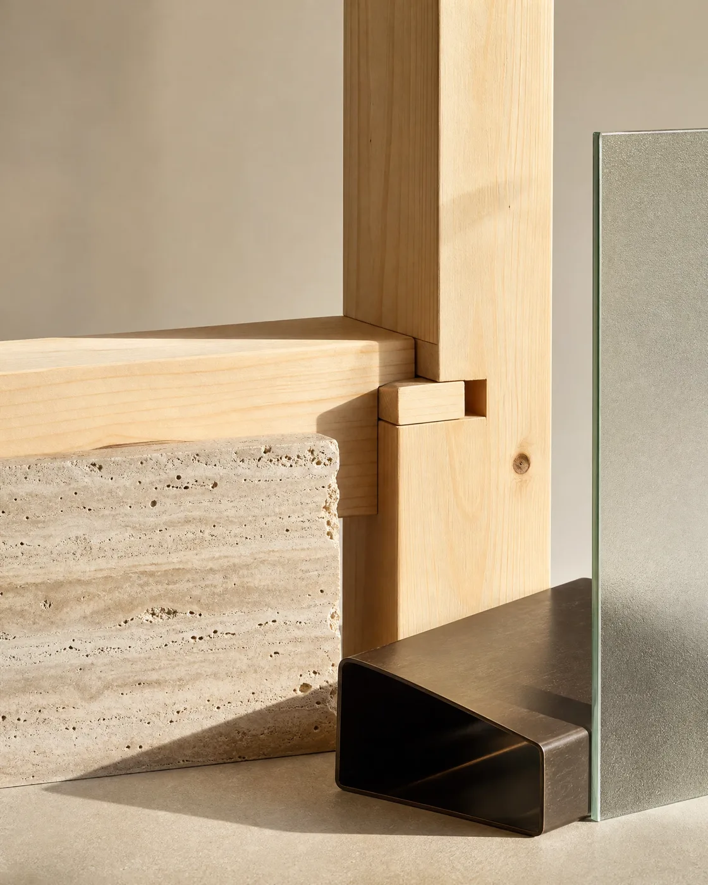

Флагманський проєкт / Концепція 2024
Бурштинова галявина
П'ять каркасних об'ємів, прошитих через сосновий ліс дерев'яним настилом. Кожен має одну функцію і власне вікно в ліс
Задум
Ліс лишається головним
Замість одного великого будинку — п'ять окремих об'ємів. Кожен ставить одну задачу собі: спати, працювати, готувати їжу, приймати гостей або просто сидіти в тиші. Між ними — дерев'яний настил, який тримає весь маршрут над мохом і корінням, не торкаючись лісової підстилки
Фасад — обвуглена деревина й чорний метал, майже невидимі під деревами вдень і теплі, немовліхтарі, у сутінках. Скло розвернуте туди, де ліс найгустіший; глухі стіни — туди, де сусідній об'єм міг би заглядати у вікна

Туман, ранній ранок — скляна стіна працює як ліхтар

Всередині: підлога з дерева, текстиль, вид на сусідній об'єм між стовбурами сосен

Вузол вікна: метал і деревина зустрічаються без облицювальної накладки

Настил веде повз стовбури, не вирівнюючи рельєф під себе
Прогулянка територією
Маршрут між об'ємами
Настил з'єднує всі п'ять об'ємів в один безперервний маршрут — без сходів і різких поворотів, лише плавна лінія між деревами

Матеріали проєкту
Ті самі чотири матеріали
Обвуглена деревина фасаду, кам'яний цоколь під кожним об'ємом, тонкі металеві рами вікон і скло на всю висоту з боку лісу — без винятків для жодного з п'яти об'ємів
Як побудована стінаСхожа ділянка? Почнімо з розмови
«Бурштинова галявина» — концепція. Наступний проєкт може початись із вашої ділянки
Розпочати проєкт